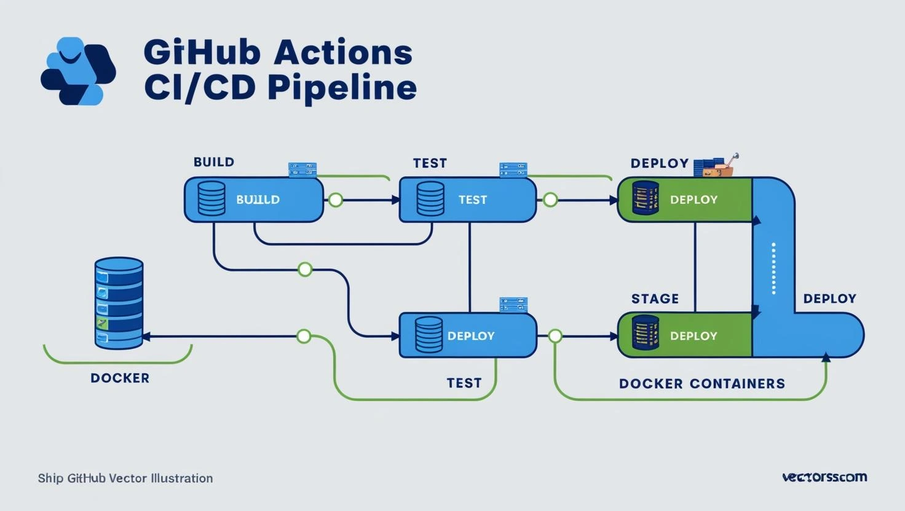

CI/CD Pipeline with GitHub Actions
Automated build, test, and deployment workflows for microservices with GitHub Actions and Docker.

Building DevOps Pipelines
I developed CI/CD pipelines using GitHub Actions to automate the testing and deployment lifecycle for microservices.
Pipelines triggered on every push to main or pull request, running unit tests, Docker builds, and pushing to GitHub Container Registry.
Environments were integrated with staging and production, ensuring smooth rollouts and instant rollbacks using tagged releases.
Project Information
- Category: CI/CD Automation
- Tools: GitHub Actions, Docker, GitHub Registry
- Date: March 2024
- Repository: Private GitHub